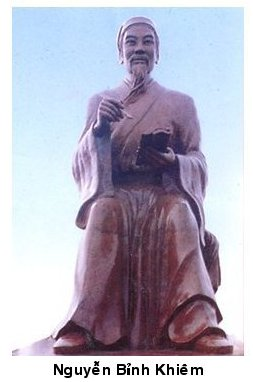

Tiểu sử Nguyễn Bỉnh Khiêm

Lần cập nhật cuối lúc Thứ sáu, 05 Tháng 10 2012 15:09 Viết bởi Administrator Thứ sáu, 21 Tháng 9 2012 09:19

TRẠNG TRÌNH NGUYỄN BỈNH KHIÊM
Nguyễn Bỉnh Khiêm theo học Đình Nguyên Bảng nhãn Lương Đắc Bằng. Năm Giáp Ngọ 1534, Ông đỗ đầu kì thi Hương , sau đó đỗ đầu hai kì thi Hội, thi Đình năm Ất Mùi 1535. Ông từng được vua Mạc phong tước Trình Tuyên Hầu nên được người đời gọi là Trạng Trình. Ông về hưu năm 53 tuổi, lập am Bạch Vân, lấy tên hiệu là Bạch Vân cư sĩ.
Năm Nhâm Dần 1542, quyền thần lũng đoạn triều chính, ông dâng sớ đòi chém 18 viên quan to cậy thế làm càn nhưng không được vua chấp nhận. Nguyễn Bỉnh Khiêm từ bỏ chức quan, về quê dạy học. Học trò của ông rất đông và rất nhiều người trở thành nhân tài của đất nước như Trạng nguyên Giáp Hải, Phùng Khắc Khoan... Dù về quê nhưng các vua nhà Mạc rất kính trọng, xem ông là thầy và thường xuyên sai sứ đến hỏi mưu kế.
Tương truyền, Nguyễn Bỉnh Khiêm còn là một nhà tiên tri, tác giả của nhiều lời sấm. Nhà Mạc, nhà Trịnh, nhà Nguyễn đều đến xin lời khuyên của ông để dựng nghiệp.
Đến năm 1585, ông mắc bệnh nặng. Khi ông qua đời, nhà vua cử phụ chính đại thần về uý tế, dựng đền thờ, nhà vua tự tay viết biển đề hàng chữ "Mạc Triều Trạng Nguyên Tể Tướng từ" (Đền thờ quan tể tướng, Trạng Nguyên triều Mạc).
itnbk.edu.vn